操作系统调度复习
调度类型
图示
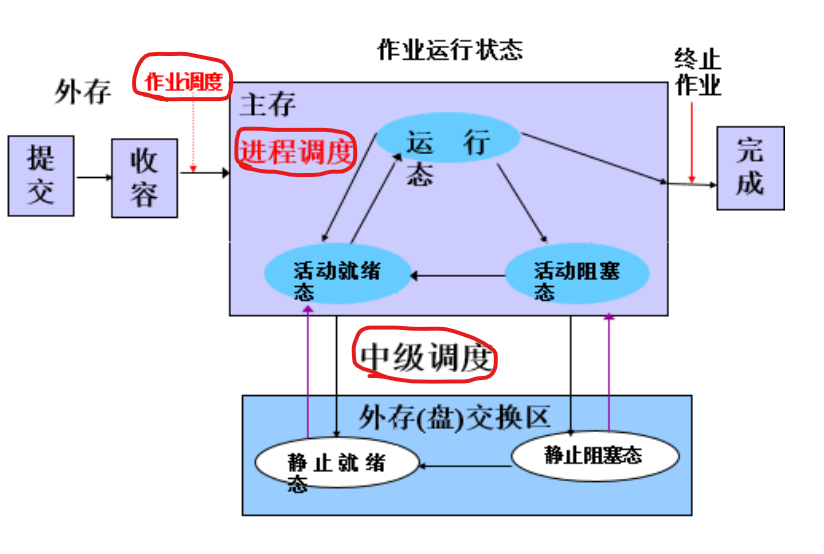
具体
- 高级调度：作业之间的调度，调度执行哪个作业，不执行哪个作业
- 中级调度：调度页面的换入换出
- 低级调度：调度进程
概念积累
周转时间
作业从提交到完成（得到结果）所经历的时间带权周转时间
周转时间/执行时间平均周转时间
作业周转总时间/作业数平均带权周转时间
带权周转总时间/作业数响应时间
发出请求到系统首次给出响应的时间。吞吐量
单位时间内所完成的作业数 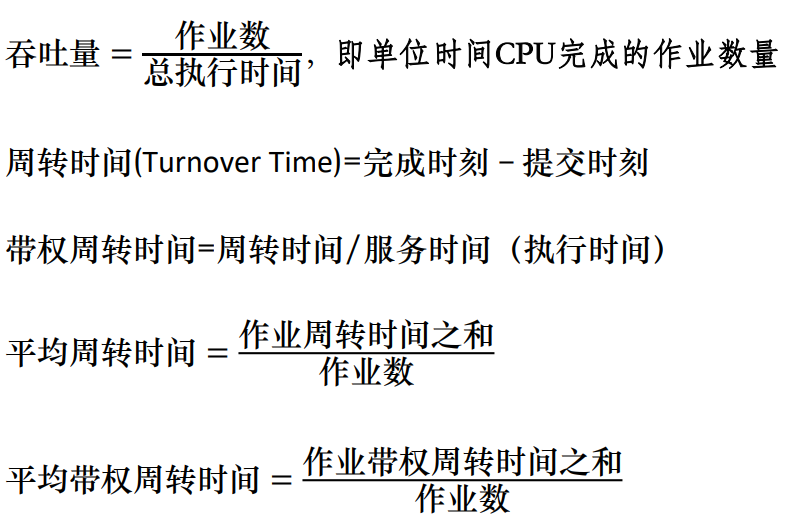进程占用CPU的方式
不可抢占式
一旦处理器分配给一个进程，它就一直占用处理器，直到该进程自己因调用原语操作或等待I/O等原因而进入阻塞状态，或时间片用完时才让出
处理器，重新进行。抢占式
就绪队列中一旦有优先级高于当前运行进程优先级的进程存在时，便立即进行进程调度，把处理器转给优先级高的进程。
批处理系统调度算法
先来先服务
调度对象
作业、进程
定义
顾名思义，谁先来拷打谁，按照来的顺序执行。
特性
- 非抢占式
- 利于长作业，不利于短作业
- 有利于CPU繁忙的作业，不利于I/O繁忙的作业。
短作业优先
调度对象
作业、进程定义
顾名思义，现在有一堆进程，先选择短的执行。特性
- 改善平均周转时间
- 非抢占式
- 改善带权平均周转时间
- 提高吞吐量
- 利于短作业，不利于长作业
- 未能依据作业的紧迫程度来划分执行的优先级
- 实际上作业的执行时间是很难估计的，这样做可能会由于错误的估计而影响调度
最短剩余时间优先
调度对象
作业、进程
定义
将短作业优先进行改进，改进为抢占式，这就是最短剩余时间优先算法了，即一个新就绪的进程比当前运行进程具有更短的完成时间，系统抢占当前进程，选择新就绪的进程执行。
特性
继承短作业优先的特性，饿死的还是长作业。
最高相应比优先
定义
HRRF（最高响应比）算法实际上是FCFS（先来先服务）算法和SJF（短作业优先）算法的折衷。
特性
- 排序依据是RP（响应比），公式如下
- 都饿不死，挺好
- 每次调度时都要计算一次，性能开销增大
交互式系统调度算法
时间片轮转
调度对象
进程
定义
将系统中所有的就绪进程按照FCFS原则，排成一个队列
每次调度时将CPU分派给队首进程，让其执行一/多个时间片。时间片的长度从几个ms到几百ms。
在一个时间片结束时，发生时钟中断，暂停当前进程的运行，根据剩余时间片决定是切换还是继续执行。
切换的话就将当前进程送到队尾，从队首取新的进程执行
特性
- 响应时间：
- 时间片过长，退化为先来先服务，过短，切的太快，反而效果欠佳。
优先级算法
调度对象
作业、进程
定义
本算法是平衡各进程对响应时间的要求，根据优先级安排队列进行调度。
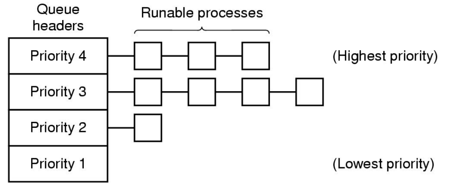
优先级
多级队列调度算法
调度对象
进程
定义
引入多个就绪队列，通过各队列的区别对待，达到一个综合的调度目标
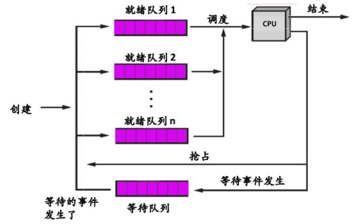
特点
- 每个队列可以有不同的调度算法，设置不同的优先级。
- 每个作业固定归入一个队列
多级反馈队列调度算法
调度对象
进程
定义
- 设置多个就绪队列，分别赋予不同的优先级（如逐级降低），队列1的优先级最高。每个队列执行时间片的长度也不同，规定优先级越低则时间片越长（如逐级加倍）。
- 新进程进入内存后，先投入队列1的末尾，按FCFS算法调度；若按队列1一个时间片未能执行完，则降低投入到队列2的末尾，同样按FCFS算法调度；如此下去，降低到最后的队列，则按“时间片轮转”算法调度直到完成。
- 仅当较高优先级的队列为空，才调度较低优先级的队列中的进程执行。如果进程执行时有新进程进入较高优先级的队列，则抢先执行新进程，并把被抢先的进程投入原队列的末尾。
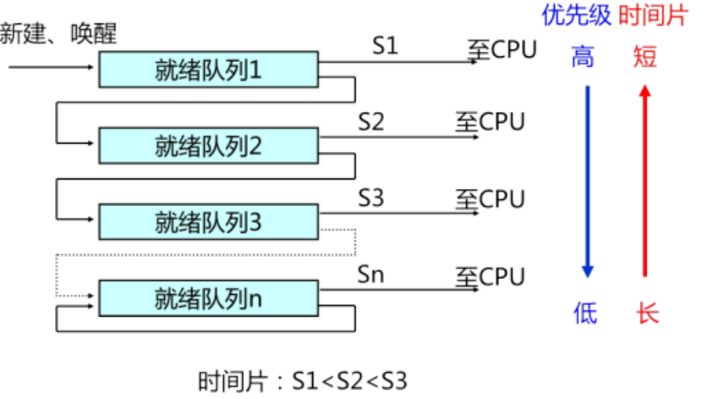特点
- 兼顾I/O型、计算型进程
实时系统调度算法
静态表调度
定义
通过对所有周期性任务的分析预测（到达时间、运行时间、结束时间、任务间的优先关系），事先确定一个固定的调度方案。
特点
- 无任何计算，方案已经给定，开销最小。
- 无灵活性、只适用于完全固定的任务场景。
单调速率调度RMS
定义
任务的周期越小，其优先级越高，优先级最高的任务最先被调度，且可以抢占
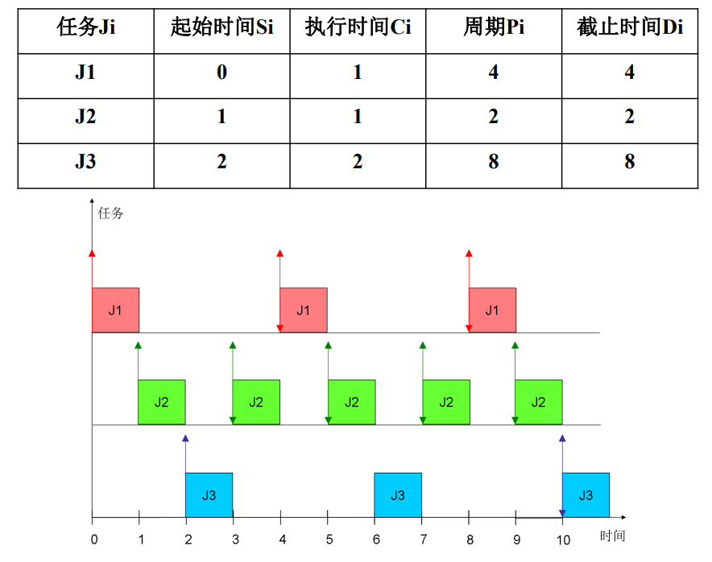
特点
- 任务集可以调度当且仅当：
$$\eqalign{
& \sum\limits_{i = 1}^n {{{{C_i}} \over {{T_i}}}} \le n(\root n \of 2 - 1) \cr
& \mathop {\lim }\limits_{n \to \infty } n(\root n \of 2 - 1) = \ln 2 \approx 0.693147 \cr} $$
Ci是某任务执行时间，Ti是某任务的周期，n是一共有几个任务。最早截止期优先EDF
定义
任务的绝对截止时间越早，其优先级越高，优先级最高的任务最先被调度
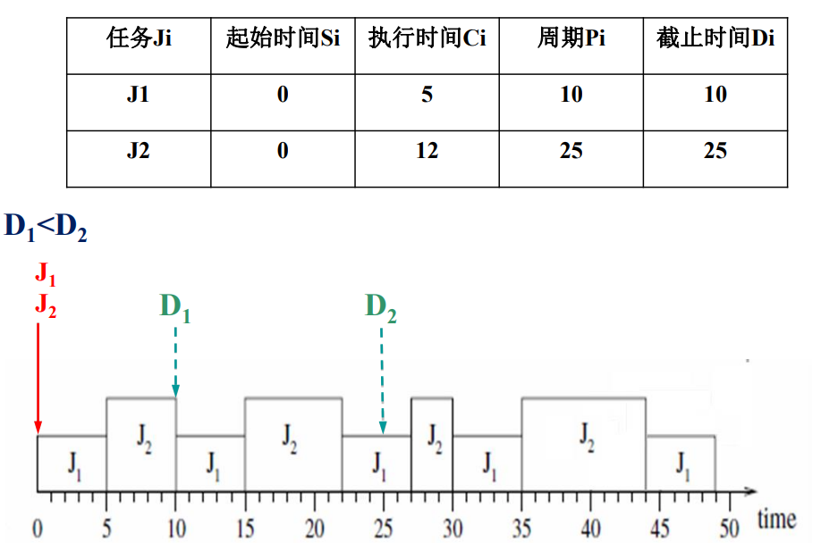特点
- 任务集可以调度当且仅当： $$\sum\limits_{i = 1}^n {{{{C_i}} \over {{T_i}}}} \le 1$$
多处理机调度
非对称式多处理系统（AMP）
定义
主处理机管理就绪队列，由主处理机分配任务给从处理机执行
特点
- 有潜在的不可靠性，主机坏了都GG
对称式多处理系统（SMP）
集中控制
静态分配
定义
每个CPU设立一个就绪队列，进程一辈子都在一个CPU上。
特点
- 算法简单开销小
- 容易忙闲不均
动态分配
定义
每个CPU共享一个就绪队列，队首进程每次分配给空闲的CPU
特点
- 不存在忙闲不均
- 开销相对而言比较大
分散控制
自调度
定义
每个CPU共享一个就绪队列，由CPU自己选择心仪的对象执行。
特点
- 无需专门的处理机来分配进程，自己管自己
- 处理机较多时，互斥访问较慢，成为瓶颈
线程调度
成组调度
定义
将一个进程中的一组线程，每次分派时同时到一组处理机上执行，剥夺时也同时进行
特点
- 批量调度减少调度次数，提高效率
- 线程调度提高并行度，提高吞吐量
专用处理机调度
定义
为进程中的每个线程都固定分配一个CPU，直到该线程执行完成。
特点
- 线程阻塞造成CPU闲置
- 无需切换，减少开销
死锁
四大必要条件
- 互斥条件：一个资源只能同时由一个进程使用
- 请求和保持条件：已经占有了部分资源，又发出了新的资源请求，新资源请求得不到满足也占着旧资源不放
- 不剥夺条件：占着的资源不能被别人剥夺，只能用完自己释放
- 环路等待条件：发生死锁时必然存在进程——资源的环形链。
处理死锁
死锁预防
措施
- 打破互斥：允许进程同时访问某些资源。
- 打破保持条件：一次性分配所有用到的资源，而不是占有一部分再去请求另一部分
- 打破不剥夺条件：允许进程从别的进程那里夺取资源
- 打破循环等待：给资源排号，申请时只能按顺序申请，让循环不可能产生
问题
- 打破互斥：不是所有的资源都能支持共享访问
- 打破保持条件：首先资源难以预测，其次资源并不会全程使用，却全程占有，利用率大大降低，导致了并发度的下降
- 打破不剥夺条件：实现起来很复杂，开销大
- 打破循环等待：合理编号开销大，其次，先申请的不一定先用，也造成了资源利用率的下降
死锁避免
银行家算法
整体框架
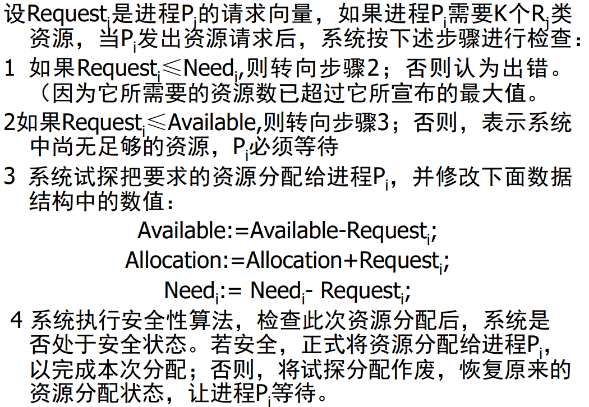
安全算法
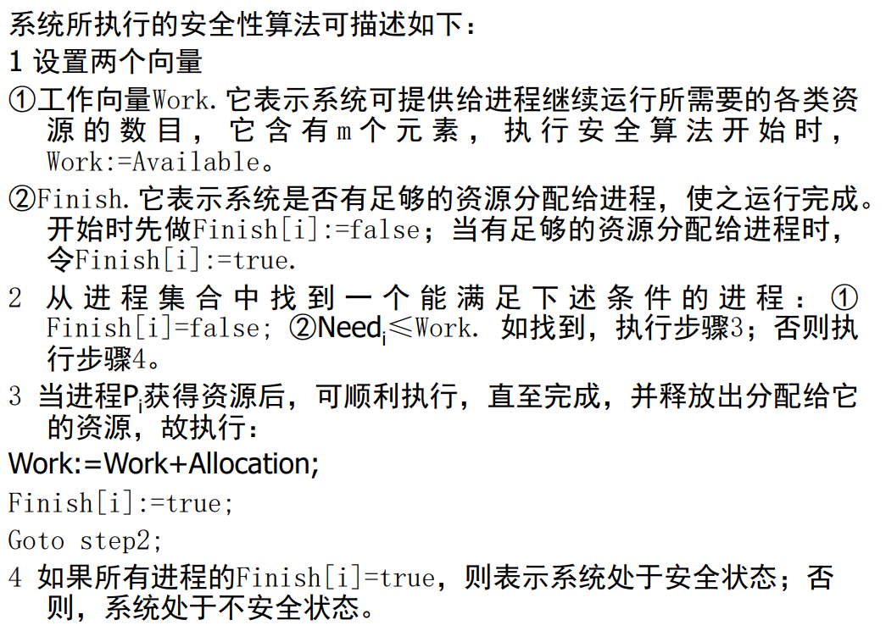
死锁检测
资源图
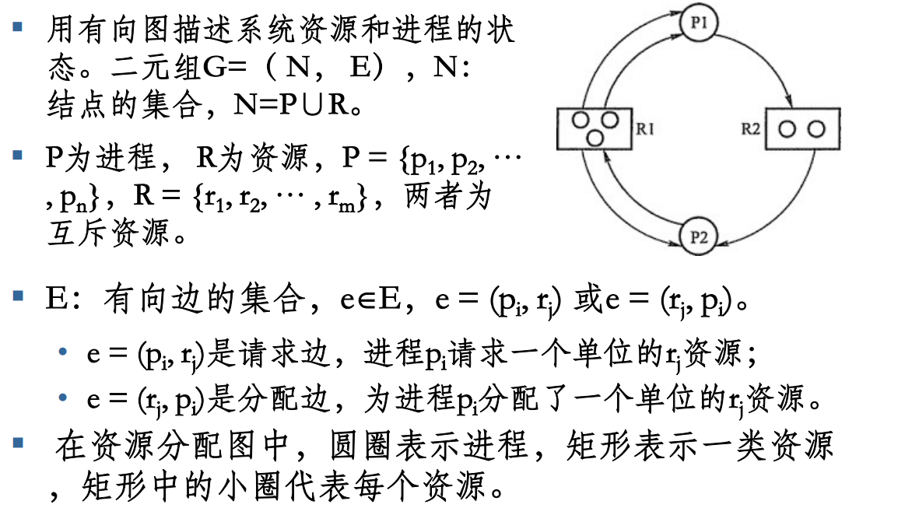
检测方法
资源图检测
- 初步判断：有无环路，有的话就存在死掉的可能
- 精细判断：化简资源图
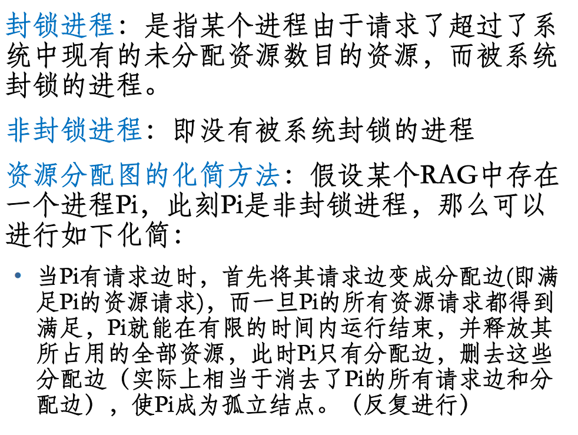资源向量算法
- E：存在资源向量：表示各类资源存在的总量
- A：可用资源向量：表示当前未分配的资源量
- C：当前分配矩阵：第i个行向量对应第i个进程已经分配到的资源向量
- R：请求资源矩阵：第i个行向量对应第i个进程所需要的资源数量
存在恒等式： $$\sum\limits_{i = 1}^n {{C_{ij}}} + {A_j} = {E_j}$$ 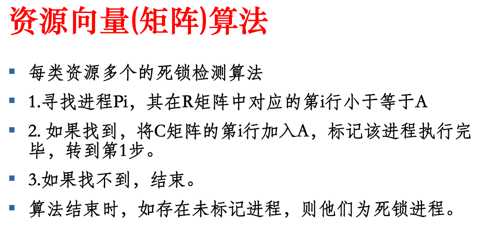死锁恢复
回滚法
为每个进程定期建立CheckPoint，发生死锁时通过回滚某个进程让其占有的资源得到释放，从而消除其他进程的死锁。
区分
活锁
是指任务或者执行者没有被阻塞，由于某些条件没有满足，导致一直重复尝试，失败，尝试，失败。
饥饿
是指任务长期得不到执行，不是它不想，而是处理机资源不给他，一旦给它，它是可以执行的，它处于就绪态，或者未被装入。